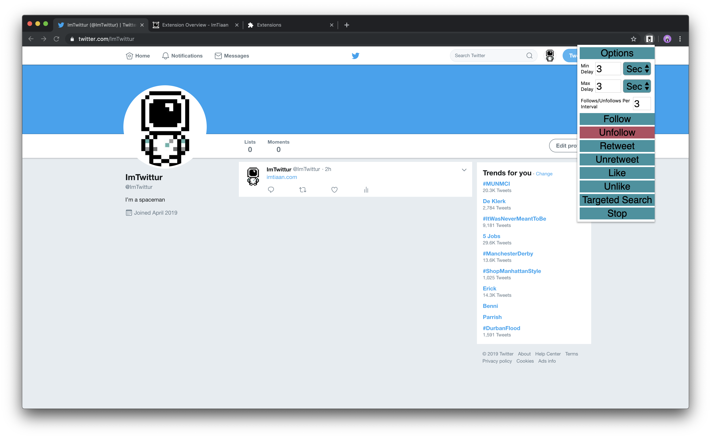

Incomplete Post
Chrome
Extension
HTML
JavaScript
Last updated on May 06, 2019
Using the Extension
Table of contents
The Menu
The menu is fairly straightforward. You have the following functions:
- Options (we’ll get to this later)
- Minimum Delay
- Maximum Delay
- Follows/Unfollows per interval
- Auto Follow
- Auto UnFollow
- Auto Retweet
- Auto UnRetweet
- Auto Like
- Auto UnLike

What numbers 5 - 10 do are self explanatory, so lets take a second to talk about the paramaters in the main menu, namely Min and Max Delay, as well as number per interval.
To understand why we set these parameters, lets take a look at what Twitter says about their limits:
About Twitter limits
Why have limits?
Limits alleviate some of the strain on the behind-the-scenes part of Twitter and reduce downtime and error pages. For the sake of reliability, we’ve placed some limits on the account actions below.
Current Twitter limits
The current technical limits for accounts are:
- Direct Messages (daily): The limit is 1,000 messages sent per day.
- Tweets: 2,400 per day. The daily update limit is further broken down into smaller limits for semi-hourly intervals. Retweets are counted as Tweets.
- Changes to account email: 4 per hour.
- Following (daily): The technical follow limit is 400 per day. Please note that this is a technical account limit only, and there are additional rules prohibiting aggressive following behavior.
- Following (account-based): Once an account is following 5,000 other accounts, additional follow attempts are limited by account-specific ratios.
These limits include actions from all devices, including web, mobile, phone, API, etc. API requests from all third-party applications are tracked against the hourly API limit. People who use multiple third-party applications with their account will therefore reach the API limit more quickly.
These limits may be temporarily reduced during periods of heavy site usage. In such cases, we will post an update on the Twitter status site.
What happens if I hit a limit?
If you do reach a limit, we’ll let you know with an error message telling you which limit you’ve hit. For limits that are time-based (like the Direct Messages, Tweets, changes to account email, and API request limits), you’ll be able to try again after the time limit has elapsed.
The Tweet limit of 2,400 updates per day is further broken down into semi-hourly intervals. If you hit your account update/Tweet limit, please try again in a few hours after the limit period has elapsed.
Having trouble?
If you’ve hit a follow limit, please see this follow limit troubleshooting article for more information.
Minimum Delay
Minimum delay is the minimum wait time that the extension will wait until performing whichever action it is that you’re asking it to carry out. The default is set to 3 seconds. This is really the minimum amount of time that I have gotten away with, however I prefer to use 5 seconds to be safe.
Maximum Delay
Maximum delay is the maximum wait time that the extension will wait until performing whichever action it is that you’re asking it to carry out. The default is set to 3 seconds. This is really the minimum amount of time that I have gotten away with, however I prefer to use 25 seconds to be safe and to allow the extension to vary the time intervals.
Follows/Unfollows Per Interval
This is pretty straightforward parameter. It simply allows you to decide how many follows or unfollows the extension performs each time it activates.
Other Limitations
A session limit of 51 actions is hard coded as a limitation of the extension as a failsafe. I will go into how to change this code yourself in a later post, to allow you to customize the extension further.